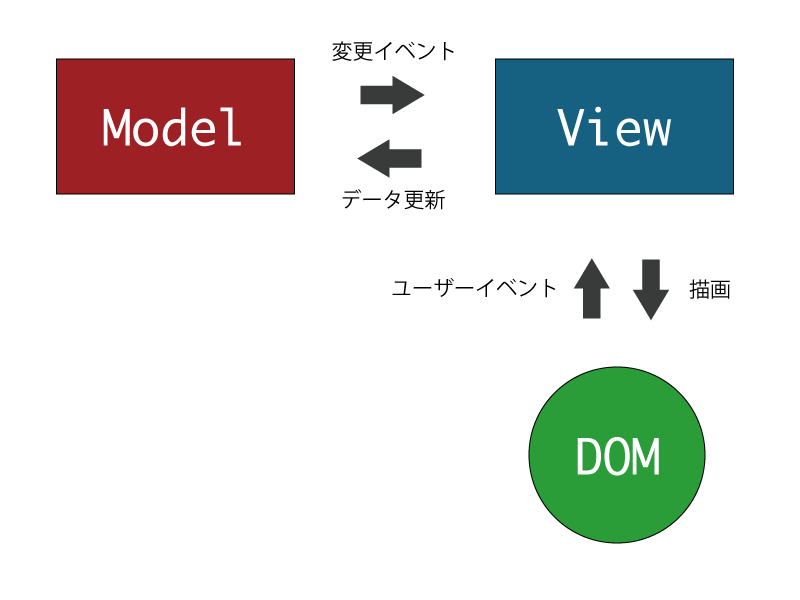
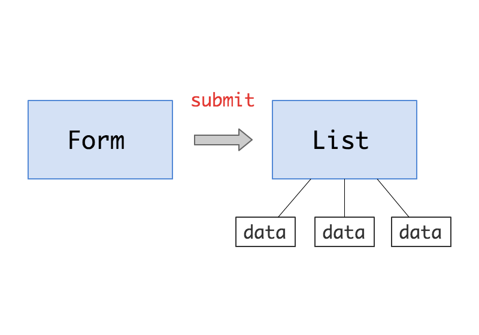
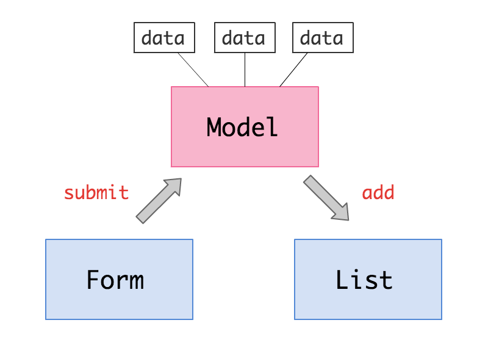

2013/10/24
$(function() {
// 要素取得してー
var $form = $('.todoForm');
var $input = $form.find('input[type="text"]');
var $list = $('.todoList');
// フォームがサブミットされたらー
$form.submit(function(e) {
e.preventDefault();
// 要素作って追加ー
var text = $input.val();
var html = '<li><input type="checkbox">' + text + '</li>';
var $li = $(html);
$list.append($li);
// イベントもここで設定しちゃうー
$li.find('input[type="checkbox"]').change(function() {
$(this).closest('li').toggleClass('complete');
});
});
});これ。MVCという言葉はどうでもいい。



// モデル
var Todos = Backbone.Collection.extend();
// フォーム
var FormView = Backbone.View.extend({
events: {
'submit': 'onSubmit'
},
onSubmit: function(e) {
e.preventDefault();
this.collection.add({ text: this.$('input[type="text"]').val() });
},
});
// リスト
var ListView = Backbone.View.extend({
initialize: function() {
this.collection.on('add', this.render, this);
},
render: function() {
// 描画処理
}
});
// 初期化
var todos = new Todos();
new FormView({ collection: todos });
new ListView({ collection: todos });フォーム以外からリストを追加したい
これだけ。
$('.usualTodos li').click(function() {
todos.add($(this).text());
});